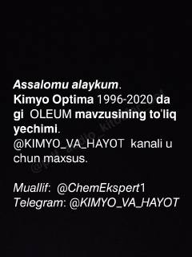

KO1996-2020 yillar oralig'idagi kimyo fanidan testlar va ularning batafsil yechimlari.
Ushbu qo'llanma 1996-yildan 2020-yilgacha bo'lgan kimyo fanidan test savollari va ularning yechimlarini o'z ichiga oladi. Kitob asosan abituriyentlar uchun mo'ljallangan bo'lib, oleum va sulfat kislota mavzulariga oid murakkab masalalarni tushuntiradi.